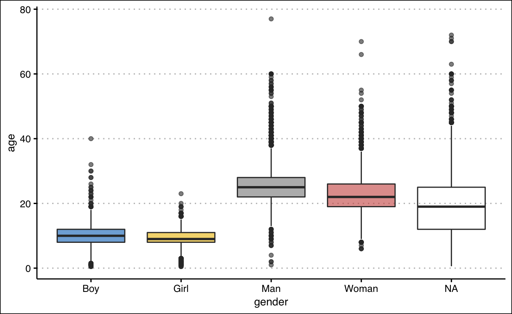
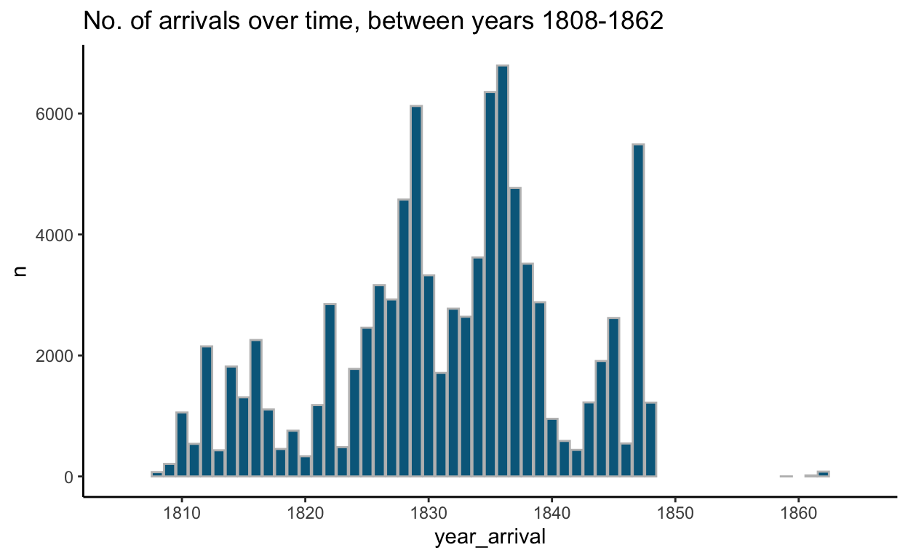
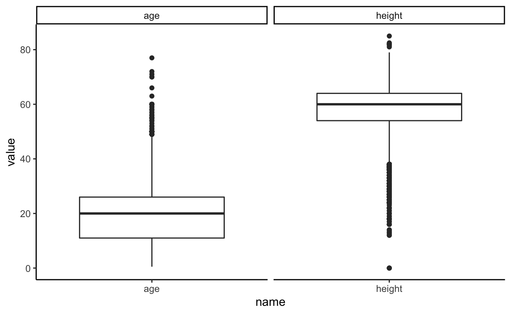
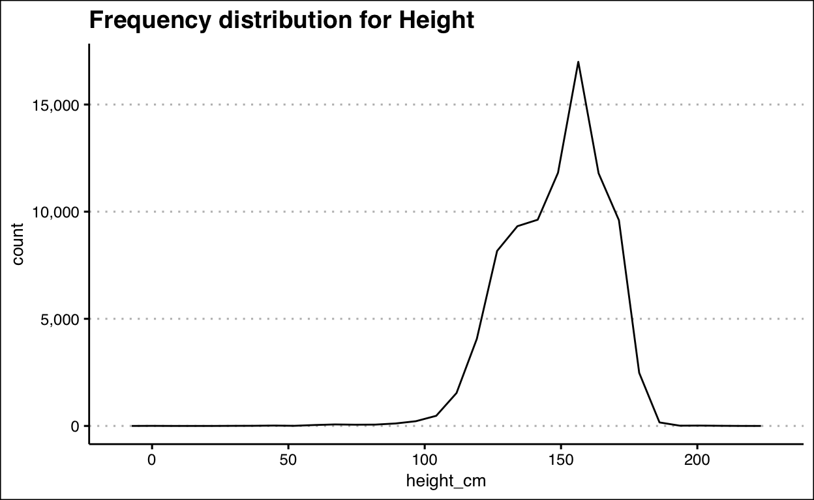
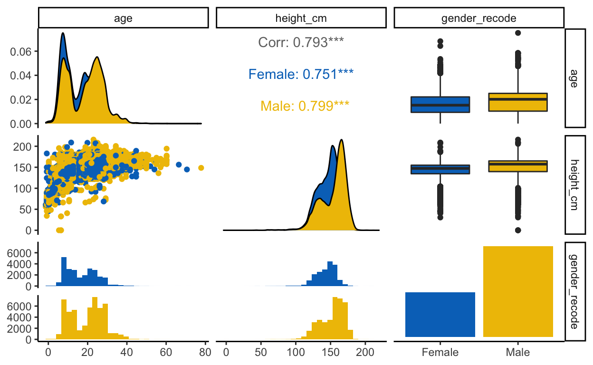
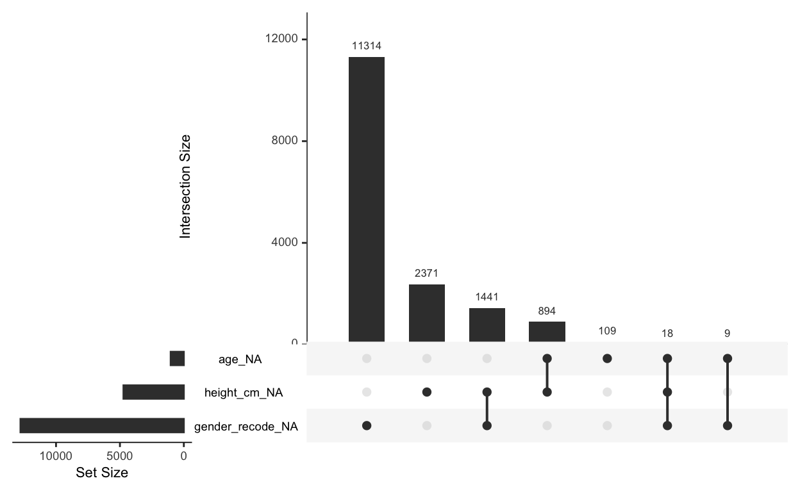

Missing data imputation - Following Julia Silge’s worked example
This is dataset on captive Africans, and Julia Silge shows how to impute missing data in her worked exmaple, which I am following closely. The link is here.
More information regarding the dataset can be found here.
african_names_raw <- readr::read_csv("https://raw.githubusercontent.com/rfordatascience/tidytuesday/master/data/2020/2020-06-16/african_names.csv")
glimpse(african_names_raw)
Rows: 91,490
Columns: 11
$ id <dbl> 1, 2, 3, 4, 5, 6, 7, 8, 9, 10, 11, 12, 13, 14…
$ voyage_id <dbl> 2314, 2315, 2315, 2315, 2315, 2315, 2315, 231…
$ name <chr> "Bora", "Flam", "Dee", "Pao", "Mufa", "Latty"…
$ gender <chr> "Man", "Man", "Man", "Man", "Man", "Man", "Ma…
$ age <dbl> 30, 30, 28, 22, 16, 22, 20, 30, 18, 23, 30, 2…
$ height <dbl> 62.5, 64.0, 65.0, 62.5, 59.0, 67.5, 62.0, 65.…
$ ship_name <chr> "NS de Regla", "Fabiana", "Fabiana", "Fabiana…
$ year_arrival <dbl> 1819, 1819, 1819, 1819, 1819, 1819, 1819, 181…
$ port_disembark <chr> "Freetown", "Freetown", "Freetown", "Freetown…
$ port_embark <chr> "Little Bassa", "Trade Town", "Trade Town", "…
$ country_origin <chr> NA, NA, NA, "Crue", "Crue", NA, "Crue", "Crue…This is a long dataset with 91,490 rows and 11 columns
skim(african_names_raw)
| Name | african_names_raw |
| Number of rows | 91490 |
| Number of columns | 11 |
| _______________________ | |
| Column type frequency: | |
| character | 6 |
| numeric | 5 |
| ________________________ | |
| Group variables | None |
Variable type: character
| skim_variable | n_missing | complete_rate | min | max | empty | n_unique | whitespace |
|---|---|---|---|---|---|---|---|
| name | 0 | 1.00 | 2 | 24 | 0 | 62330 | 0 |
| gender | 12878 | 0.86 | 3 | 5 | 0 | 4 | 0 |
| ship_name | 1 | 1.00 | 2 | 59 | 0 | 443 | 0 |
| port_disembark | 0 | 1.00 | 6 | 19 | 0 | 5 | 0 |
| port_embark | 1126 | 0.99 | 4 | 31 | 0 | 59 | 0 |
| country_origin | 79404 | 0.13 | 3 | 31 | 0 | 563 | 0 |
Variable type: numeric
| skim_variable | n_missing | complete_rate | mean | sd | p0 | p25 | p50 | p75 | p100 | hist |
|---|---|---|---|---|---|---|---|---|---|---|
| id | 0 | 1.00 | 62122.02 | 51305.07 | 1.0 | 22935.25 | 45822.5 | 101263.8 | 199932 | ▇▆▃▁▂ |
| voyage_id | 0 | 1.00 | 17698.25 | 82016.88 | 557.0 | 2443.00 | 2871.0 | 3601.0 | 500082 | ▇▁▁▁▁ |
| age | 1126 | 0.99 | 18.89 | 8.60 | 0.5 | 11.00 | 20.0 | 26.0 | 77 | ▆▇▁▁▁ |
| height | 4820 | 0.95 | 58.61 | 6.84 | 0.0 | 54.00 | 60.0 | 64.0 | 85 | ▁▁▂▇▁ |
| year_arrival | 0 | 1.00 | 1831.40 | 9.52 | 1808.0 | 1826.00 | 1832.0 | 1837.0 | 1862 | ▂▆▇▃▁ |
There are a lot of missing data for:
african_names_raw %>%
count(gender)
# A tibble: 5 × 2
gender n
<chr> <int>
1 Boy 18896
2 Girl 12019
3 Man 33827
4 Woman 13870
5 <NA> 12878african_names_raw %>%
select(gender, age) %>%
ggplot(aes(gender, age)) +
geom_boxplot(aes(fill = gender), alpha = 0.6, show.legend = F) +
scale_fill_jco() +
theme_clean()

african_names_raw %>%
count(ship_name) %>%
arrange(desc(n))
# A tibble: 444 × 2
ship_name n
<chr> <int>
1 Maria 1116
2 Carolina 1089
3 Emilia 886
4 Esperança 860
5 Vingador 845
6 Iberia 726
7 Águia 720
8 Málaga of Belouru 716
9 Josephina 712
10 Felicidade 680
# … with 434 more rowsafrican_names_raw %>%
count(port_disembark, sort = T) %>%
kbl()
| port_disembark | n |
|---|---|
| Freetown | 81009 |
| Havana | 10058 |
| Bahamas unspecified | 183 |
| Kingston, Jamaica | 144 |
| St. Helena | 96 |
5 major ports, this can be recoded into a factor
african_names_raw %>%
count(port_embark, sort = T) %>%
kbl()
| port_embark | n |
|---|---|
| Lagos | 15730 |
| Bonny | 14449 |
| Ouidah | 8306 |
| Old Calabar | 7192 |
| Gallinhas | 4522 |
| Bight of Benin unspecified | 3958 |
| Rio Pongo | 2922 |
| Badagry | 2729 |
| Cameroons River | 2165 |
| Sierra Leone unspecified | 2091 |
| Loango | 1926 |
| Bight of Biafra unspecified | 1856 |
| Rio Brass | 1603 |
| Popo | 1542 |
| Sherbro | 1422 |
| Rio Nun | 1405 |
| New Calabar | 1324 |
| Freetown | 1167 |
| NA | 1126 |
| Cabinda | 1124 |
| Ambriz | 1101 |
| Bimbia | 892 |
| Cameroons, unspecified | 862 |
| Congo North | 715 |
| Bissau | 679 |
| Anomabu | 627 |
| Gabon | 624 |
| West Central Africa unspecified | 597 |
| Mozambique | 578 |
| Jacquin | 540 |
| Congo River | 524 |
| Cap Lopez | 473 |
| Cape Mount | 463 |
| Porto Novo | 450 |
| Luanda | 410 |
| Keta | 388 |
| Quicombo | 362 |
| Gambia | 285 |
| Grand Bassa | 249 |
| Windward Coast unspecified | 249 |
| Cacheu | 248 |
| Grand Mesurado | 233 |
| St. Paul | 231 |
| Gold Coast unspecified | 209 |
| Nova Redonda | 192 |
| Little Bassa | 184 |
| Sestos | 169 |
| Mayumba | 94 |
| Senegambia, unspecified | 83 |
| Iles de Los | 69 |
| Rio Nunez | 52 |
| Ile Principé | 22 |
| Bananas, Goree and Senegal | 17 |
| Iles Plantain | 13 |
| Trade Town | 13 |
| Gorée | 11 |
| Mano | 10 |
| Oerê | 8 |
| Petit Popo | 3 |
| Corisco | 2 |
min(african_names_raw$year_arrival) # 1808
[1] 1808max(african_names_raw$year_arrival) # 1862
[1] 1862african_names_raw %>%
group_by(year_arrival) %>%
summarise(n = n()) %>%
ggplot(aes(year_arrival, n)) +
geom_col(col = "grey", fill = "deepskyblue4") +
scale_fill_jco() +
scale_x_continuous(limits = c(1805, 1865),
n.breaks =8) +
labs(title = "No. of arrivals over time, between years 1808-1862") +
theme_classic()

There seem to be a gap in information between 1850 - 1860. To filter out information after 1850.
african_names_raw %>%
filter(year_arrival>1850) %>%
count() %>%
mutate(pct = n/nrow(african_names_raw)*100)
# A tibble: 1 × 2
n pct
<int> <dbl>
1 96 0.105This is about 0.1% of the data that is discarded.
glimpse(african_names_raw)
Rows: 91,490
Columns: 11
$ id <dbl> 1, 2, 3, 4, 5, 6, 7, 8, 9, 10, 11, 12, 13, 14…
$ voyage_id <dbl> 2314, 2315, 2315, 2315, 2315, 2315, 2315, 231…
$ name <chr> "Bora", "Flam", "Dee", "Pao", "Mufa", "Latty"…
$ gender <chr> "Man", "Man", "Man", "Man", "Man", "Man", "Ma…
$ age <dbl> 30, 30, 28, 22, 16, 22, 20, 30, 18, 23, 30, 2…
$ height <dbl> 62.5, 64.0, 65.0, 62.5, 59.0, 67.5, 62.0, 65.…
$ ship_name <chr> "NS de Regla", "Fabiana", "Fabiana", "Fabiana…
$ year_arrival <dbl> 1819, 1819, 1819, 1819, 1819, 1819, 1819, 181…
$ port_disembark <chr> "Freetown", "Freetown", "Freetown", "Freetown…
$ port_embark <chr> "Little Bassa", "Trade Town", "Trade Town", "…
$ country_origin <chr> NA, NA, NA, "Crue", "Crue", NA, "Crue", "Crue…african_names_raw %>%
select(age, height) %>%
pivot_longer(everything()) %>%
ggplot(aes(name, value)) +
geom_boxplot() +
facet_grid(. ~ name, scales = "free") +
theme_classic()

african_names_raw %>%
select(age) %>%
ggplot(aes(age)) +
geom_freqpoly() +
labs(title = "Frequency distribution for Age") +
scale_y_continuous(labels = scales::comma_format()) +
theme_clean()
min(african_names_raw$age, na.rm = T)
[1] 0.5max(african_names_raw$age, na.rm = T)
[1] 77african_names_raw %>%
filter(age == 0.5)
# A tibble: 7 × 11
id voyage_id name gender age height ship_name year_arrival
<dbl> <dbl> <chr> <chr> <dbl> <dbl> <chr> <dbl>
1 17082 3019 Bahboh Boy 0.5 22 Donna Ba… 1829
2 18294 3014 Ahbetah Boy 0.5 22 Hosse 1829
3 18947 3023 Yahjoh Boy 0.5 24 Emilia 1829
4 19421 3024 Dahmajae Girl 0.5 24 Santo Ia… 1829
5 103325 7627 Ballee Girl 0.5 NA S Miguel… 1812
6 104037 7508 Sagata Boy 0.5 NA Andorinha 1812
7 104138 7508 Ingoho Girl 0.5 NA Andorinha 1812
# … with 3 more variables: port_disembark <chr>, port_embark <chr>,
# country_origin <chr>african_names_raw %>%
mutate(height_cm = height * 2.54) %>%
filter(age < 2) %>%
select(age, height_cm)
# A tibble: 128 × 2
age height_cm
<dbl> <dbl>
1 1.5 31.8
2 1 76.2
3 1 76.2
4 1 107.
5 1.5 96.5
6 1 61.0
7 1 45.7
8 1 61.0
9 1 61.0
10 1 34.3
# … with 118 more rowsThere are babies who are sold as slaves too.
african_names_raw %>%
count(height, sort = T)
# A tibble: 201 × 2
height n
<dbl> <int>
1 63 5446
2 64 5236
3 62 5207
4 65 4885
5 61 4843
6 NA 4820
7 59 4315
8 66 3937
9 60 3601
10 58 3181
# … with 191 more rowsafrican_names_raw %>%
mutate(height_cm = height * 2.54) %>%
select(height_cm) %>%
ggplot(aes(height_cm)) +
geom_freqpoly() +
labs(title = "Frequency distribution for Height") +
scale_y_continuous(labels = scales::comma_format()) +
theme_clean()

african_names <- african_names_raw %>%
filter(year_arrival <= 1850) %>%
mutate(gender_recode = factor(gender),
gender_recode = case_when(gender_recode == "Boy" ~ "Male",
gender_recode == "Man" ~ "Male",
gender_recode == "Girl" ~ "Female",
gender_recode == "Woman" ~ "Female")) %>%
mutate(port_disembark = factor(port_disembark)) %>%
mutate(height_cm = round(height * 2.54, 2)) %>%
select(-gender, -height) %>%
mutate(across(where(is.character), factor))
# check gender
african_names %>%
count(gender_recode)
# A tibble: 3 × 2
gender_recode n
<fct> <int>
1 Female 25889
2 Male 52723
3 <NA> 12782# glimpse
glimpse(african_names)
Rows: 91,394
Columns: 11
$ id <dbl> 1, 2, 3, 4, 5, 6, 7, 8, 9, 10, 11, 12, 13, 14…
$ voyage_id <dbl> 2314, 2315, 2315, 2315, 2315, 2315, 2315, 231…
$ name <fct> "Bora", "Flam", "Dee", "Pao", "Mufa", "Latty"…
$ age <dbl> 30, 30, 28, 22, 16, 22, 20, 30, 18, 23, 30, 2…
$ ship_name <fct> NS de Regla, Fabiana, Fabiana, Fabiana, Fabia…
$ year_arrival <dbl> 1819, 1819, 1819, 1819, 1819, 1819, 1819, 181…
$ port_disembark <fct> "Freetown", "Freetown", "Freetown", "Freetown…
$ port_embark <fct> "Little Bassa", "Trade Town", "Trade Town", "…
$ country_origin <fct> NA, NA, NA, "Crue", "Crue", NA, "Crue", "Crue…
$ gender_recode <fct> Male, Male, Male, Male, Male, Male, Male, Mal…
$ height_cm <dbl> 158.75, 162.56, 165.10, 158.75, 149.86, 171.4…african_names %>%
select(age, height_cm, gender_recode) %>%
drop_na(gender_recode) %>%
ggpairs(aes(col = gender_recode)) +
scale_color_jco() +
scale_fill_jco() +
theme_classic()

african_names %>%
select(height_cm) %>%
ggplot(aes(height_cm)) +
geom_freqpoly() +
theme_classic()
# to confirm skewness using moments package
height_vector <- african_names %>%
select(height_cm) %>%
drop_na() %>% # remove na for calculation
as_vector() # for skewness calculation
moments::skewness(height_vector) #-0.767 : negatively skewed
[1] -0.7675827There are many different approaches to the interpretation of the skewness values. A rule of thumb states that:
african_names %>%
select(age, height_cm, gender_recode) %>%
naniar::gg_miss_upset()

This plot shows that most of the missing data for the three variables come from gender, followed by height and age.
For machine learning, the data should be split into train and test data before imputation. For this example, Julia Silge wanted to focus on statistical inference rather than predictive analysis, hence the data was only pre-processed to impute missing data, without splitting the data first.
The aim for the modelling was to find out what changed as years went by, in terms of gender, age and height. However, for the purpose of this exercise, it was for me to familiarise myself with the concept of imputing missing data.
impute_recipe <- recipe(year_arrival ~ gender_recode + age + height_cm,
data = african_names) %>%
step_impute_median(height_cm) %>% # since is negatively skewed
step_impute_knn(all_predictors()) # using height to impute age and gender
imputed_data <- impute_recipe %>%
prep() %>%
bake(new_data = NULL)
imputed_data %>%
skim()
| Name | Piped data |
| Number of rows | 91394 |
| Number of columns | 4 |
| _______________________ | |
| Column type frequency: | |
| factor | 1 |
| numeric | 3 |
| ________________________ | |
| Group variables | None |
Variable type: factor
| skim_variable | n_missing | complete_rate | ordered | n_unique | top_counts |
|---|---|---|---|---|---|
| gender_recode | 0 | 1 | FALSE | 2 | Mal: 60654, Fem: 30740 |
Variable type: numeric
| skim_variable | n_missing | complete_rate | mean | sd | p0 | p25 | p50 | p75 | p100 | hist |
|---|---|---|---|---|---|---|---|---|---|---|
| age | 0 | 1 | 18.84 | 8.58 | 0.5 | 11.00 | 19.0 | 26.00 | 77.0 | ▆▇▁▁▁ |
| height_cm | 0 | 1 | 149.04 | 16.95 | 0.0 | 137.16 | 152.4 | 162.56 | 215.9 | ▁▁▂▇▁ |
| year_arrival | 0 | 1 | 1831.37 | 9.48 | 1808.0 | 1826.00 | 1832.0 | 1837.00 | 1848.0 | ▂▂▇▇▃ |
Now, there is no more missing data.
LM is actually not suitable for the linear model defined. Appropriate data transformations should be carried out before doing linear modelling, such as taking care of the skewed data, or robust linear regression.
Call:
lm(formula = year_arrival ~ gender_recode + age + height_cm,
data = imputed_data)
Coefficients:
(Intercept) gender_recodeMale age
1834.13827 0.35515 0.02380
height_cm
-0.02316
ASSESSMENT OF THE LINEAR MODEL ASSUMPTIONS
USING THE GLOBAL TEST ON 4 DEGREES-OF-FREEDOM:
Level of Significance = 0.05
Call:
gvlma::gvlma(x = lm)
Value p-value Decision
Global Stat 29783.5 0 Assumptions NOT satisfied!
Skewness 1658.4 0 Assumptions NOT satisfied!
Kurtosis 627.1 0 Assumptions NOT satisfied!
Link Function 148.4 0 Assumptions NOT satisfied!
Heteroscedasticity 27349.6 0 Assumptions NOT satisfied!The order for carrying out data-preprocessing using recipes package should be in the following order:
As mentioned earlier, for machine learning, data-preprocessing should be carried out on training data only.
-https://juliasilge.com/blog/captive-africans-voyages/
For attribution, please cite this work as
lruolin (2021, Nov. 17). pRactice corner: Captive Africans Dataset. Retrieved from https://lruolin.github.io/myBlog/posts/20211117 - Imputation for missing data (Julia Silge's tutorial)/
BibTeX citation
@misc{lruolin2021captive,
author = {lruolin, },
title = {pRactice corner: Captive Africans Dataset},
url = {https://lruolin.github.io/myBlog/posts/20211117 - Imputation for missing data (Julia Silge's tutorial)/},
year = {2021}
}